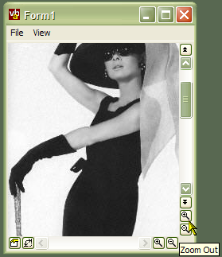

VB5 Scroll Buttons Control Binary (14K)
VB5 Scroll Buttons Control Binary (14K)
 VB5 Scroll Buttons Control Demonstration (73K)
VB5 Scroll Buttons Control Demonstration (73K)
 VB5 Scroll Buttons Control Full Source (99K)
VB5 Scroll Buttons Control Full Source (99K)
 VB6 Scroll Buttons Control Binary (14K)
VB6 Scroll Buttons Control Binary (14K)
 VB6 Scroll Buttons Control Demonstration (71K)
VB6 Scroll Buttons Control Demonstration (71K)
 VB6 Scroll Buttons Control Full Source (98K)
VB6 Scroll Buttons Control Full Source (98K)
 Bugs: 1 / 1
Bugs: 1 / 1
 Issues: 0 / 0
Issues: 0 / 0
 Questions: 0 / 0
Questions: 0 / 0
 2 Jan 2002
2 Jan 2002
First Posted
 Adding XP Visual Styles to Your Visual Basic Application
Adding XP Visual Styles to Your Visual Basic Application
 Adding Scroll Bars to Forms, PictureBoxes and User Controls
Adding Scroll Bars to Forms, PictureBoxes and User Controls
 Subclassing Without The Crashes
Subclassing Without The Crashes

vbAccelerator Scroll Buttons Control
Create scroll bars with integral push and check-buttons
This control provides an implementation of an API scroll bar control which can be extended to display completely configurable buttons at either end of the scroll bar. This way you can add extra functionality like the VB code editor's Procedure/Full Module view buttons or zoom in and out buttons like those seen in music applications like Cakewalk and Acid.
In Use
To set up a scroll bar with buttons, you need an ImageList source for the buttons (note that this control, unlike some of the API-based controls elsewhere on the site, will work with a VB6 ImageList as well as a ComCtl32.dll ImageList.) Typically, the icons for the buttons will be 10x10 bitmaps. The demonstration application contains 8 useful sample buttons.
Using the Scroll Bar
The scroll bar has a very similar interface to the VB scroll bar control, so you can configure the scroll bar Min, Max, Value and LargeChange properties and so on. The same events (Scroll and Change are also raised. The main differences are
- ScrollType
The control implements both Horizontal and Vertical scroll bars within the same code, so you need to set which type of bar it is. In addition, you can display a Size Gripper scroll bar, but note that Windows only draws it as a gripper when the parent of the scroll bar is a form. - 32-bit Scroll Range
The scroll bar uses the GetScrollInfo API to allow the full 32-bit scroll range rather than being limited to 16 bits as with the VB scroll bar
Configuring the ImageList
To associate an ImageList, set the ImageList property of the control to either a VB ImageList instance, or to the hIml (also referred to as hImageList) property of a vbAccelerator or ComCtl32.DLL ImageList. Setting the ImageList is optional, however, if you don't specify one then the buttons will appear blank.
Configuring Buttons
You can add and modify the properties of any buttons you want to associate with the control. Buttons can be either push buttons or check buttons, and check buttons can be grouped so they work as options.
- AddButton
This method takes a number of parameters, all of which are optional and many can be changed later using the other properties of the control:
sKey: The key to use to refer to the button later.
sToolTipText: Tooltip text to display for the button.
lIconIndexUp: Zero-based index of the icon to display when the button is up.
lIconIndexDown: Zero-based index of the icon to display when the button is down. If this is not set, but lIconIndexUp has been supplied, then the button up icon will be displayed.
ePosition: The position to show the button in (which side of the scroll bar).
bCheck: Whether the button is a check button or not.
sCheckGroup: If the button is a check button, then the name of a key which specifies the name of the group. When the button is checked, any other buttons with the same sCheckGroup key will be unchecked.
bVisible: Whether the button is visible or not.
vKeyBefore: The key of a button to place this button before. - ButtonEnabled
Gets/sets whether the specified button is enabled. - ButtonIndex
Returns the index of the button for the specified key. - ButtonKey
Returns the Key of the button for the specified button index (1-based). - ButtonToolTipText
Gets/sets the tooltip text to be shown for the button. - ButtonValue
Gets/sets the value of the button (checked, unchecked or undetermined). - ButtonVisible
Gets/sets whether the specified button should be shown. - XpStyleButtons
On XP systems, causes the button to be drawn using the XP theme API. Ignored on non-XP systems.
Responding to Button Events
When a button is clicked, the control raises a ButtonClick event, passing the 1-based index of the button.
Making the ScrollBars XP Style
If you want the ScrollBars to appear using XP Visual Styles, you need to include a Manifest with your application. Refer to the article Adding XP Visual Styles. The demonstration project includes a Manifest to achieve this.